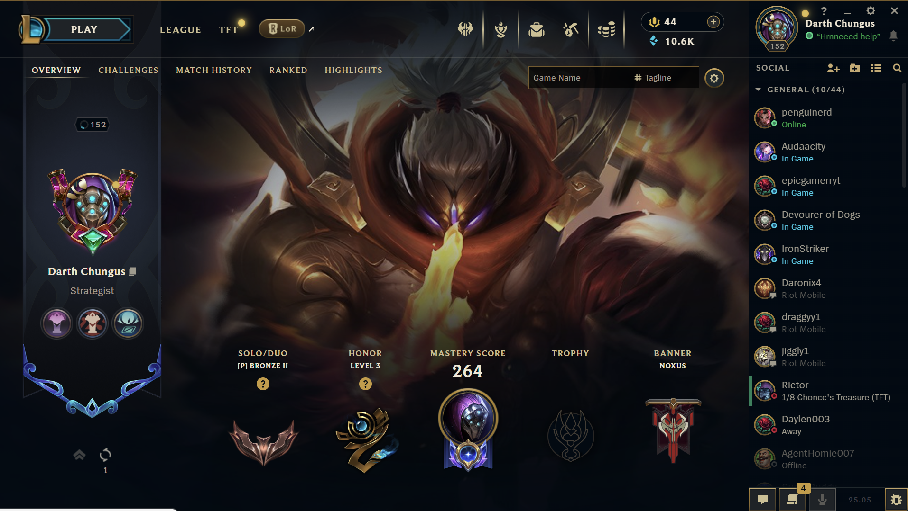
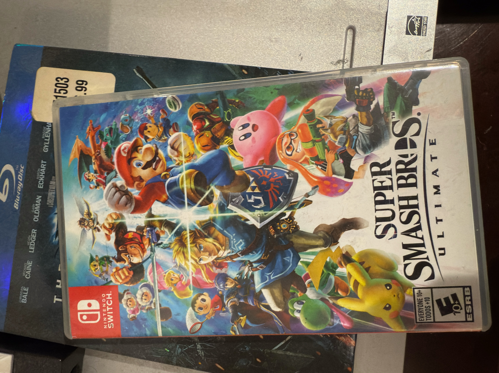

I frequently play video games to both unwind after a long day and challenge myself mentally.
I also use video games to stay connected with friends that I cannot meet physically. They serve as the backdrop for friendly interactions and good times.
While I enjoy a wide variety of different games, there are some that see a lot more play time than others. These include:
Here's a picture of some of the games I play!em>
 Please feel free to search my League of Legends account on op.gg!
I tend to play single player games when I want to challenge myself. Many single player games like Elden Ring are puposefully designed to engage you at every level and then challenge you through difficulty, puzzles, and combat.
I seek these games out when I've had a slow day and want to really engage myself for a couple of hours.
As I have grown older, I find that I don't seek these types of games out as much as I used to. However, I still make the time to play any new releases.
I like to play multi player games exclusively with my grounp of friends. These types of game serve as a good background activity while we catch up and hang out.
Sometimes, these types of games also test our ability to work together as a team, while leading to a lot of funny hijinks.
I tend to mostly play multi player games in my free to stay connected with my friends. I really enjoy the fact that these types of games give us an easy way to hangout no matter where we are in the world.
Please feel free to navigate back to the Hobbies page to learn about my other hobby!